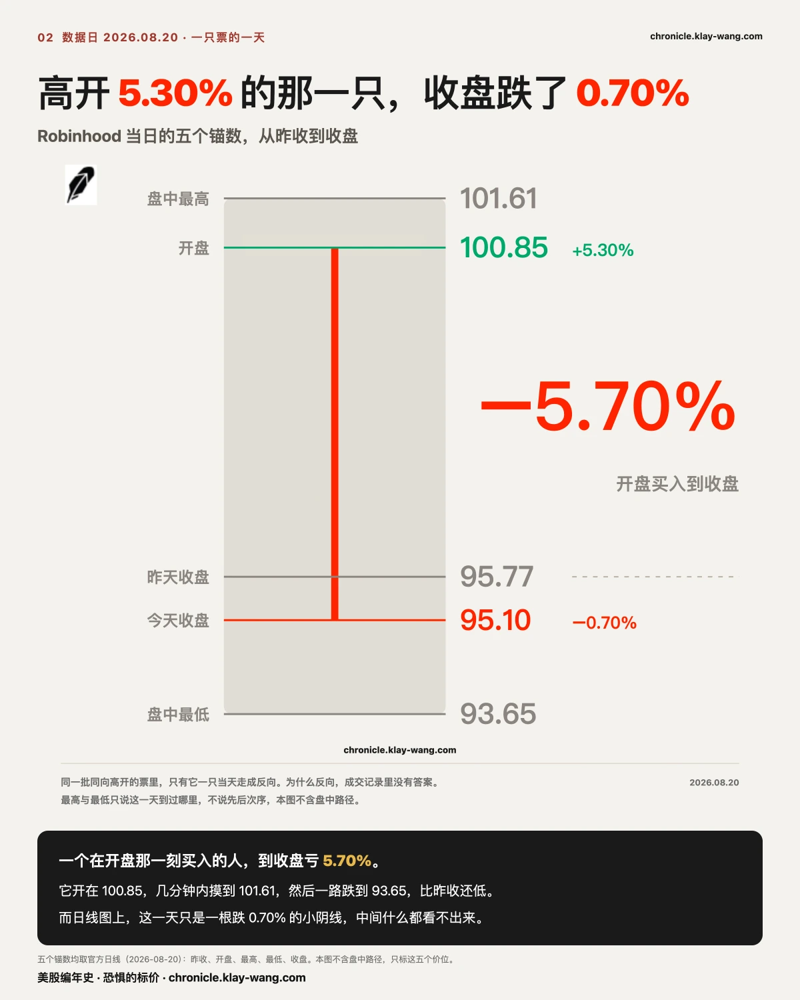
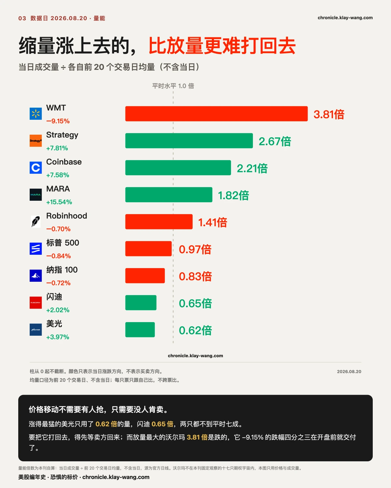
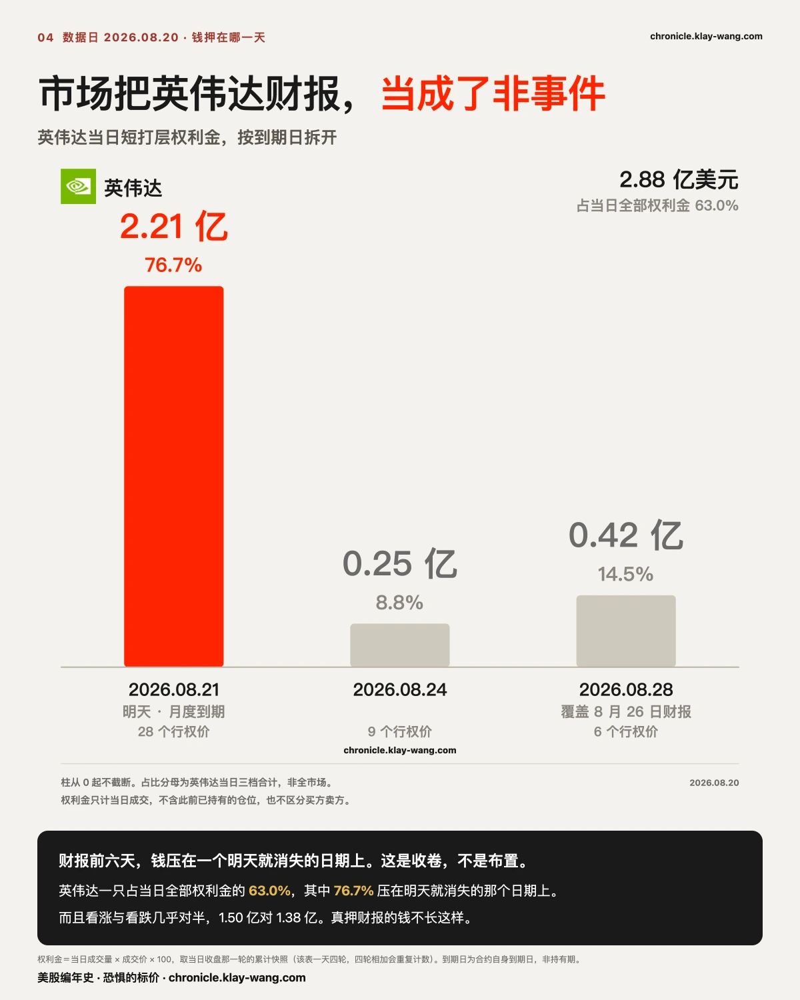
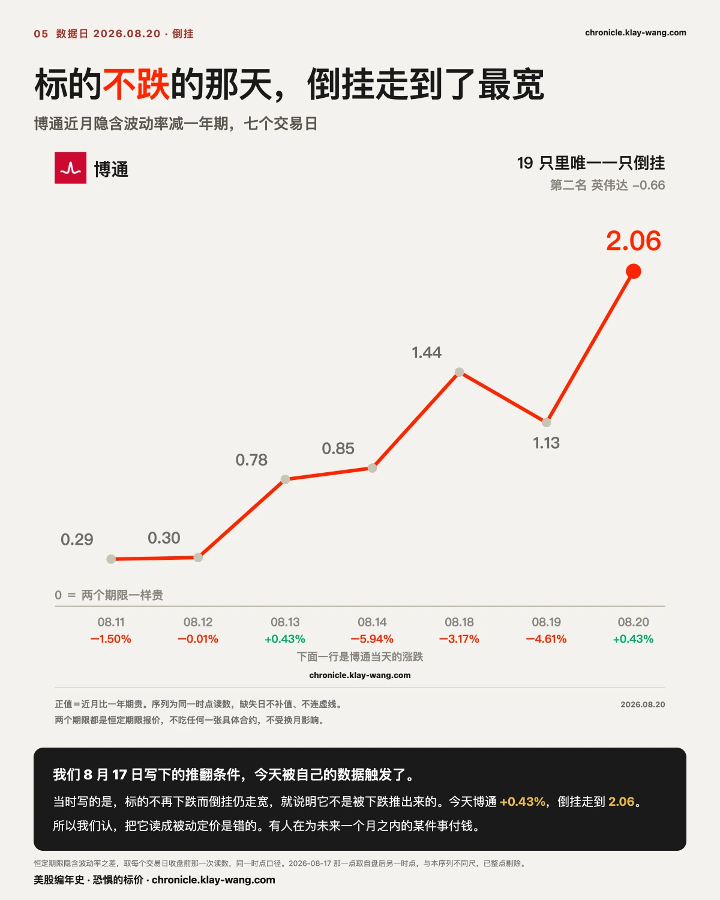
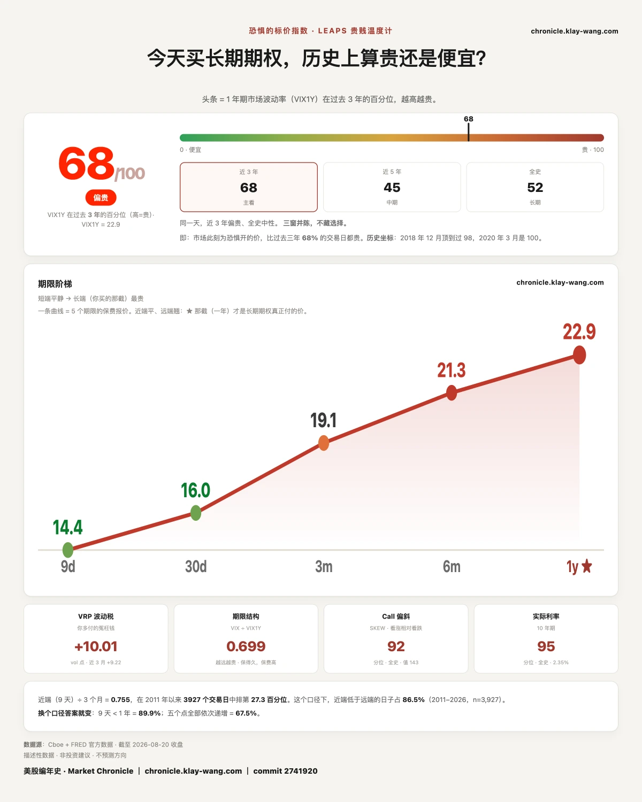

都说周三在避险，为什么期权那一侧一整天都在加仓？ · 8.17-8.21
这一期讲什么
Strategy 今天收涨 7.81%，排在全场前列。这个数字对绝大多数账户没有意义：8.61 个百分点在开盘之前就已经完成，正式交易时段里它是下跌的，−0.74%。Coinbase 同型，跳空 +7.83%，盘中 −0.23%。
美光同一天涨 3.97%，开盘却是低开的，跳空 −0.22%，全部涨幅在交易时段内走完。闪迪形状一致。
涨幅榜把这两种东西排在一起，用同一种颜色印出来。它们不是同一种收益。
成交量把两组彻底分开。Strategy 全天成交是二十日均量的 2.67 倍，Coinbase 2.21 倍；美光 0.62 倍，闪迪 0.65 倍。一只股票用不到平时六成的量涨了近 4%，缺的不是买方的热情，是卖方。
连着两个交易日，这个市场都是靠一侧缺席在移动。 昨天跌幅最深的四只全部缩量，我们当时的结论是没有人在卖、是没有人在接。今天涨幅最大的两只同样缩量，性质相同，方向相反。
多数复盘会把这样的两天叫做窄幅整理。我们的读法不同，报价簿正在变薄，而变薄的时点卡在月度到期的前一天。 半天没有买盘就能被推下去、半天没有卖盘就能被推上去的市场，说明愿意在中间承接的资金在减少。
证伪条件写在这里：明天结算之后，若成交量回到均量之上而日内波幅反而收窄，那么这两天只是到期前的例行清淡，下一期回来更正。

〔时点〕涨幅榜排错了序，它该按能不能参与来排
一个交易日可以拆成两段：昨收到今开的隔夜段，以及开盘到收盘的交易段。前一段绝大多数账户下不了单，后一段才是可交易的部分。
| 票 | 昨收 | 开盘 | 收盘 | 隔夜段 | 交易段 | 全天 |
|---|---|---|---|---|---|---|
| Strategy | 104.25 | 113.23 | 112.39 | +8.61% | −0.74% | +7.81% |
| Coinbase | 160.20 | 172.75 | 172.35 | +7.83% | −0.23% | +7.58% |
| MARA | 9.65 | 10.21 | 11.15 | +5.80% | +9.21% | +15.54% |
| Robinhood | 95.77 | 100.85 | 95.10 | +5.30% | −5.70% | −0.70% |
| 美光 | 937.11 | 935.01 | 974.33 | −0.22% | +4.21% | +3.97% |
| 闪迪 | 1568.87 | 1569.00 | 1600.62 | +0.01% | +2.02% | +2.02% |
按全天涨幅排，前三是 MARA、Strategy、Coinbase，美光第五。改按交易段排，名次整个反过来：MARA +9.21%，美光 +4.21%，闪迪 +2.02%，Strategy 和 Coinbase 落到零轴之下。
后面这张表描述的才是当天真实存在过的机会，前一张只是新闻标题。 两张表每天同时存在，被引用的永远是第一张。
MARA 是六只里唯一两段同号的一只，隔夜 +5.80%，交易段再走 +9.21%。今天真正稀缺的是这个形状，不是那个最大的数字。
〔单点〕高开五个点收在全天低位，这是一次出货，不是没人接
Robinhood 今天高开 5.30%，开盘 100.85，数分钟内触及全天最高 101.61。此后跳空被全数吐回，且不止于此：全天最低 93.65，低于昨日收盘的 95.77，尾盘收 95.10，全天跌 0.70%。开盘买入到收盘，账面损失 5.70%。
同一批隔夜跳空的票，收盘落点差得很远：
| 票 | 隔夜跳空 | 收盘在全天区间的位置 | 量能倍数 |
|---|---|---|---|
| MARA | +5.80% | 96.7% | 1.82 倍 |
| Strategy | +8.61% | 75.0% | 2.67 倍 |
| Coinbase | +7.83% | 72.0% | 2.21 倍 |
| Robinhood | +5.30% | 18.2% | 1.41 倍 |
前三只都收在全天区间的七成以上，唯独 Robinhood 收在 18.2%，几乎贴着最低价。
这个组合能把意图读出来。如果只是买盘不足、没人接，成交量应该萎缩；今天它的量是平时的 1.41 倍。放量、冲高、收在全天低位，三件事同时出现，指向的是高位有人在主动卖，而不是低位没人接。 隔夜消息把开盘价抬到一个位置，那个位置成了兑现窗口，接走的是当天追进去的人。
用行话说，这是一次拉高出货的日内形态。分辨它和普通回落只需要一个动作：看回落那一段有没有量。缩量回落是无人问津，放量回落是有人交货。
这个读法的推翻条件同样具体：若它在低位重新放量收复今天的跳空，说明今天这批换手是接盘不是出货，下一期改口。

〔量能〕今天的注意力全给了沃尔玛，而更值得看的那只没人提
各只当日成交量除以自身前二十个交易日均量：
| 票 | 全天涨跌 | 量能倍数 |
|---|---|---|
| 沃尔玛 WMT | −9.15% | 3.81 倍 |
| Strategy | +7.81% | 2.67 倍 |
| Coinbase | +7.58% | 2.21 倍 |
| MARA | +15.54% | 1.82 倍 |
| Robinhood | −0.70% | 1.41 倍 |
| 标普 SPY | −0.84% | 0.97 倍 |
| 纳指 QQQ | −0.72% | 0.83 倍 |
| 闪迪 SNDK | +2.02% | 0.65 倍 |
| 美光 MU | +3.97% | 0.62 倍 |
沃尔玛是当天唯一放出三倍以上成交量的大市值股，财报日跌 9.15%，昨收 114.30，开盘 106.38，收 103.84。这 9.15% 里有 6.93 个百分点来自跳空，占四分之三。当天全部的目光落在这只票上，而它四分之三的跌幅在无人可交易的时段内交付完毕。
剩下那四分之一同样有话说。 它开在 106.38，全天最高 107.00 就在开盘附近，最低 102.85，收 103.84，收盘落在全天区间的 23.9%，同时量能 3.81 倍。
财报跳空之后通常有两种走法。一种是低开之后往回收、收在区间上半部，那是隔夜的坏消息被当成便宜筹码接走，市场叫它利空出尽。另一种是低开之后继续往下磨、收在区间下沿，说明在这个价格上卖方仍然占优，接的人不够。今天走的是第二种，而且是在三倍量能上走的。放量往下换手，不是筑底，是筹码还在往外走。
推翻条件：若次日在同等或更大的量能上收复今天的跳空，说明今天只是恐慌出清的尾段，这个读法作废。
真正的信息在美光那一行：0.62 倍的量，涨 3.97%。 缩量上涨说明的不是抢筹，是这个价位上没人愿意卖。放量上涨随时可以被同等的量砸回去，缩量上涨要被打回去，得先等卖方回来。
这也是我们跟当天多数复盘的分歧。 那些复盘会把沃尔玛写成主线，美光一句带过。次序应该反过来。沃尔玛的跌幅交付在没人能参与的时段，美光的涨幅全部交付在人人都能参与的时段。
昨天在下跌一侧写的那句话，今天在上涨一侧一字不改仍然成立。薄盘口不挑方向。

〔期权〕市场把英伟达财报当成了非事件，这是眼下最难跟的一个共识
今天全市场短打层权利金合计 4.575 亿美元，英伟达一只占 2.881 亿，分布在 43 个行权价上，占比 63.0%。单只吃掉六成，看上去像是有人在为六天后的财报重仓布置。
按到期日拆开，结论反转。
| 到期日 | 档数 | 权利金 | 占比 |
|---|---|---|---|
| 2026-08-21（明天，月度到期） | 28 | 2.211 亿 | 76.7% |
| 2026-08-24 | 9 | 0.253 亿 | 8.8% |
| 2026-08-28（覆盖 8 月 26 日财报的第一档） | 6 | 0.417 亿 | 14.5% |
看涨与看跌接近对半，1.505 亿对 1.376 亿。
真正为一份财报布置的资金会集中在覆盖财报的那一档，并明显偏向一侧。今天这笔钱押在一个明天就消失的日期上，两侧下注还几乎等重。这是月度到期日的头寸清理，不是财报布置。
由此推出的判断是，市场目前把这场财报当成一件不需要提前准备的事。在一年里最受关注的单季业绩前六天，这个共识是我们最难跟的一个。 对错由 8 月 26 日之后的价格给出，已经记在案。
昨天那节要与今天连起来读，两者量的不是同一样东西。昨天写市场买的是 8 月 26 日这一天，依据是隐含波动率在跨财报那一档翻倍，说的是价格；今天说的是成交。定价重心在 8 月 28 日，资金重心在 8 月 21 日。市场完全可以一面给远处的风险标高价，一面把绝大部分实际交易压在最近的到期日上。
当天最扎眼的单档在 8 月 21 日到期、行权价 237.5 的看跌上：成交 8224 张，持仓仅 76 张，成交量是持仓量的 108.2 倍。该档位于现价上方 9.5%，为深度实值，明天到期。

〔倒挂〕我们上一次的读法是错的，而且错在方向上
博通近月隐含波动率高于一年期，这道倒挂已延续六个交易日。今天走到 2.06，为序列最宽，单日走宽 0.93 同样是序列之最。全部 19 只观察对象中仍只有博通一只倒挂，第二名英伟达为 −0.66。
同一时点序列，取每日 15:45 收盘前那一次读数：0.29、0.30、0.78、0.85、1.44、1.13、2.06。
关键在于博通今天没有下跌。收 364.03，涨 0.43%，为连跌两个交易日之后的第一次收涨。
8 月 17 日给这道倒挂立案时写下的推翻条件是，若标的不再下跌而倒挂继续走宽，则被下跌推出来的被动定价这个读法不成立。
今天该条件干净触发。把博通的倒挂读成被动定价，是错的。
替代读法同样说死：一只不再下跌的股票，其近月保险仍在变贵，指向有人在为未来一个月之内某件带日期的事情付费，且只在这一个月内付费。一年期报价今天几乎未动，仍在 47.87。这不是对博通长期看法的改变，是对一段近期日程的定价。
新读法的推翻条件：若倒挂在标的持续不跌的日子里收敛回 1 以下，则它只是一次短期波动率抽动，与任何日程无关，届时再认一次。

〔大盘 · 恐惧的标价〕市场不为措辞付钱，只为日期付钱
今天读数 67.9，8 月 19 日为 63.4。一年期波动率报价由 22.69 回到 22.90。
五档由近及远，两日并排：
| 期限 | 08.19 | 08.20 | 变化 |
|---|---|---|---|
| 9 天 | 12.66 | 14.39 | +1.73（+13.7%） |
| 1 个月 | 14.89 | 16.01 | +1.12（+7.5%） |
| 3 个月 | 18.57 | 19.06 | +0.49（+2.6%） |
| 6 个月 | 20.90 | 21.25 | +0.35（+1.7%） |
| 1 年 | 22.69 | 22.90 | +0.21（+0.9%） |
昨天五档同时下移，我们据此写下措辞归措辞、没人为纪要多付一分钱保险费。今天五档同时涨回，而标普只跌了 0.84%。那句话对了一半，另一半今天要自己更正：昨天的便宜不代表市场不怕，只代表付钱的日子还没到。
涨幅分布把这一点说清楚了。越近的期限贵得越多，9 天档一夜之间贵 13.7%，一年档只动 0.9%，整条曲线几乎是绕着远端在转。
再往外一层。2027 年 9 月 17 日那张到期表，距今 393 天，今天报出一条干净的下坡：标普往下 4.27% 的那一档要 19.72，往上 4.25% 的那一档只要 16.95，同样的距离，往下贵 2.77 个波动点。纳指同型，往下 25.58，往上 23.84，差 1.74。被重新定价的只有最近这几天，一年那一层不但总价几乎未动，内部倾斜也没动。
这条曲线一直在说同一件事：市场不为一份文件的措辞付钱，只为一个具体日期付钱。 明天是 8 月的月度到期日，一整个月的头寸要在明天结算。短期保险在到期前一天被重新定价，比任何一份会议纪要都更具体。

〔对账〕四笔账全部有了答案，其中两笔要我们自己认错
第一笔，波动率期货换月，昨天算的数与今天实际发生的数差 0.19。
昨天写明：8 月合约到期，前月读数 15.29，下一张 17.61，次日起前月读数会机械跳高 2.32 个点，与行情无关。今天实际的前月读数是 17.80，跳了 2.51 个点。其中 2.32 来自换月，0.19 才是市场当天真的动了。同一天现货 VIX 由 14.89 走到 16.01，涨 1.12。
换月把一个 0.19 的真实变化，在表面上放大成 2.51。这类机械跳变每年被当成行情读四次以上，而它每一次都可以提前拆出来。 明天会有人拿 17.80 对比 15.29 说波动率一夜暴涨 16%，那句话在算术上成立，在事实上不成立。
第二笔，博通那道倒挂从 1.13 是继续走宽还是收敛。 走宽，到 2.06，创序列新高。详见上文，同时认掉我们自己的一个读法。
第三笔，纳指与标普 9 月 11 日那两组看跌，四条腿的持仓全部留了下来。
昨天写下的判据是，两条腿的持仓若同步上升相近数量，价差这个读法坐实。今天四档的结算持仓全部到手：
| 合约 | 昨日持仓 | 今日结算持仓 | 增量 | 昨日成交 | 增量占成交 |
|---|---|---|---|---|---|
| 纳指 09.11 到期 705 看跌 | 1372 | 33721 | +32349 | 33448 | 96.7% |
| 纳指 09.11 到期 680 看跌 | 1444 | 33897 | +32453 | 33349 | 97.3% |
| 标普 09.11 到期 760 看跌 | 1923 | 35094 | +33171 | 33945 | 97.7% |
| 标普 09.11 到期 740 看跌 | 2599 | 34143 | +31544 | 33753 | 93.5% |
四条腿一起上升，四个比值全部落在 93% 到 98% 这个窄区间里。读成一个有边界的结构，站得住。 六位数张的指数看跌成交，第一反应通常是有人在赌崩盘；四条腿等量对开的结构说明相反的事，赔付被封在两个行权价之间，买的是一段路，不是一个方向。
口径上有一件事要说清楚，因为它以后还会咬人：持仓量的结算本来就比成交慢一拍，而两个数据源之间也隔着一个结算周期。今天这四个数取的是反映昨天成交的那一版，不是同一天两个源混着读出来的。
第四笔，微软那八档看涨。持仓塌了，原因查清楚了，而且它推翻的是昨天那一节的定性。
八档的结算持仓今天全部塌了：390 看涨由 600 到 16，415 看涨由 2219 到 1，425 看涨由 957 到 1，435 看涨由 1673 到 12，八档合计减少 6882 张。整段实值区今天只剩 498 张，持仓全堆在虚值一端，540 看涨 10480、530 看涨 7646、520 看涨 4445。
第一反应是当天来回。真正的原因是另一件事。
微软的除息日就是 8 月 20 日，每股派息 0.91 美元。 深度实值的看涨要拿到这笔股息，必须在除息前一个交易日行权，也就是 8 月 19 日，正是这批持仓消失所对应的那一天。
价格上还有第二重印证。这八档 8 月 19 日的成交价全部低于内在价值：
| 行权价 | 成交价 | 内在价值 | 差 |
|---|---|---|---|
| 390 | 93.25 | 94.31 | −1.06 |
| 395 | 88.85 | 89.31 | −0.46 |
| 400 | 83.80 | 84.31 | −0.51 |
| 415 | 68.80 | 69.31 | −0.51 |
| 420 | 63.60 | 64.31 | −0.71 |
| 425 | 58.55 | 59.31 | −0.76 |
| 430 | 53.45 | 54.31 | −0.86 |
| 435 | 49.13 | 49.31 | −0.18 |
（内在价值＝微软 8 月 19 日收盘 484.31 减行权价。）
低于内在价值买入一张看涨，只有一种情况下划算：立刻行权。买进来、当场行权、拿走 0.91 美元的股息，这是除息前一天的常规动作，不是方向性下注。
所以昨天那一节要更正的不只是数字，是定性。8 月 19 日写的最集中的一组下注、约 1.15 亿美元，这个说法是错的。那不是下注，是一次股息套利。 单笔时间价值只差几毛钱可以说是成交时点造成的噪音，八档全为负、叠上当天就是除息日、再叠上持仓次日归零，三重印证同向，不再是巧合。
今天几个判断的推翻条件，一并写在这里，下一期回来认：
如果 8 月 21 日加密那三只出现跳空为负、白天为正的反向组合，那么本期把跳空型上涨读成不可参与，就只是单日形状；两日同型则加强。
如果美光和闪迪明天在同样量能（1 倍以下）上转为下跌，那么薄盘口不挑方向这句成立得更彻底；如果它们要放量到 1.5 倍以上才继续涨，那么今天的低量上涨就要重新解释。
如果博通的倒挂在标的继续不跌的日子里收敛回 1 以下，那么今天认下的主动定价这个读法要收回。
如果英伟达 8 月 24 日与 8 月 28 日两档的权利金在明天到期之后没有接上来，那么今天写的月度到期收卷成立；如果它们大幅接上，说明今天只是钱在排队等着换档。
今天值得带走的三句话
涨幅榜该按能不能参与来排，而不是按大小排。Strategy 今天 +7.81%，其中可交易的那一段是 −0.74%。
缩量上涨比放量上涨更难被打回去，因为要打回去，得先等卖方回来。美光今天用 0.62 倍的量涨了 3.97%。
连着两天靠一侧缺席移动，多数人叫它窄幅整理，我们叫它报价簿在变薄。
预告与下一期回访
明天是 8 月的月度到期日。下一期回来对五件事：加密那三只是不是连着第二天把涨幅全放在跳空里；美光和闪迪的低量上涨能不能续上；博通那道 2.06 的倒挂在到期日之后是收还是继续走宽；英伟达那 2.211 亿明天结算掉之后，钱是接到下一个到期日还是就地消失；以及一批 8 月 21 日到期的老账，包括三张远期价目表和闪迪 1600 看跌的最终结局。
期权页每个交易日更新。昨天的钱今天还在不在，那一章可以逐日翻。
恐惧的标价指数（Fear-Price Index）· 2026-08-20 · 读数 68/100：一年期波动率 VIX1Y 为 22.90，处于近三年第 68 百分位，高即贵。逐日台账与口径 → chronicle.klay-wang.com · 转载注明：恐惧的标价指数 · Market Chronicle
本站不提供投资建议，不预测方向，不做择时。